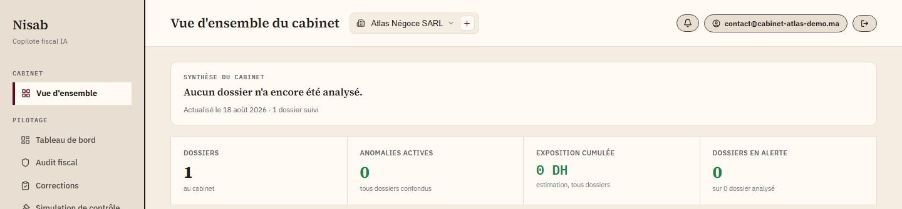

Fini les nuits blanches à chercher le bon article.
Nisab lit vos écritures, repère les anomalies fiscales et vous montre, article par article, pourquoi. Zéro chiffre inventé — promis.
Prototype de fin d’études — chiffres mesurés sur les bancs de test du dépôt, pas sur une base de clients en production.
Un règlement en espèces de 6 200 DH dépasse la limite autorisée pour ce fournisseur.
Art. 11-II du CGI« … règlement en espèces supérieur à 5 000 dirhams par jour et par fournisseur … »

Chercher un seul article ne suffit pas.
Une recherche documentaire classique ne retient souvent qu’un seul article par écriture — parfois le mauvais, et l’audit affiche « 0 DH » sur un risque bien réel. Nisab ajoute des règles de calcul déterministes en complément de la recherche : elles vérifient leur référence dans les textes avant d’émettre une alerte. Article introuvable, aucune alerte.
Comment ça marche, en vrai
De l’import à la correction validée.
CSV, Excel, Odoo en direct, ou une photo de facture.
Dans les textes de loi et dans les calculs — jamais au hasard.
Chaque alerte pointe un vrai article. Sinon, pas d’alerte.
Le brouillon part vers Odoo seulement après votre feu vert.
Se connecte à votre existant
Pas de ressaisie — Nisab lit ce que vous utilisez déjà.
Sécurité et gouvernance
Prouvé par des tests, pas seulement documenté.
- Cloisonnement
- Chaque cabinet est strictement isolé des autres, prouvé dans les deux sens — 14 scénarios testés, lecture et écriture.
- Rôles
- Collaborateur, dirigeant (lecture seule), admin cabinet, admin plateforme — jamais confondus.
- Journal d’accès
- Chaque accès aux dossiers et à l’administration est tracé — exigence CNDP.
- Écritures comptables
- Brouillon Odoo à l’état brouillon, jamais validé automatiquement.
On vous crée votre espace ?
Inscription immédiate, pas de liste d’attente.